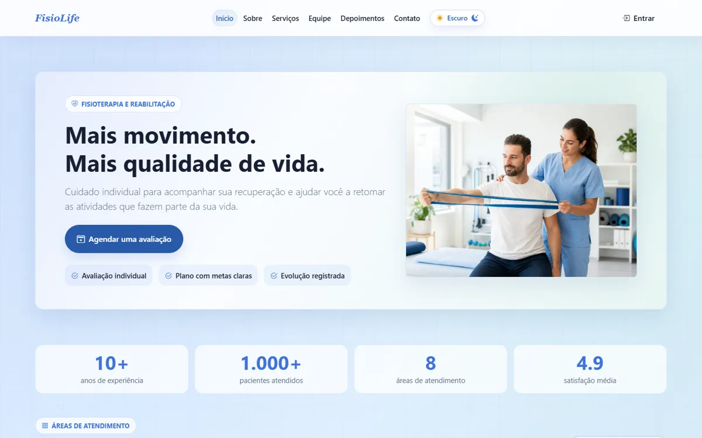
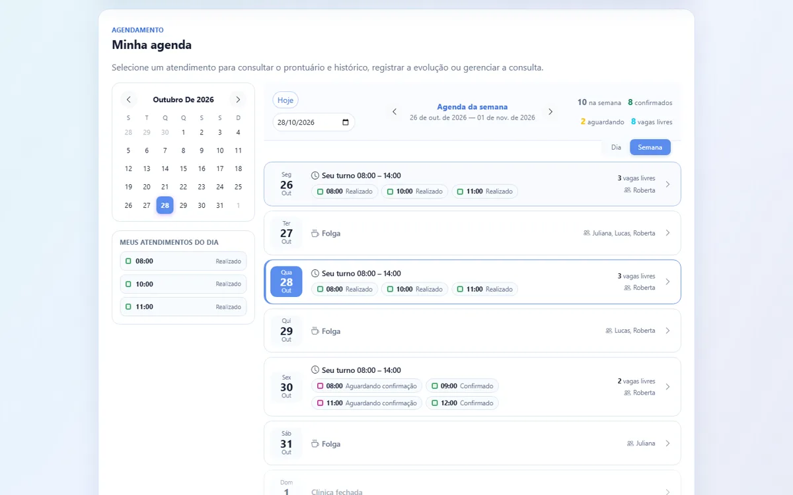

Projeto em destaque
FisioLife
Sistema web completo para clínicas de fisioterapia: agendamento online, prontuário eletrônico com anexos, financeiro, caixa e relatórios. Quatro portais com permissões próprias (paciente, fisioterapeuta, recepção e administrador).
- 52 testes de integração aprovados
- Recuperação de senha por e-mail e exportação CSV
- Tema escuro e layout responsivo